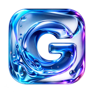

glass
studio
LIQUID GLASS EDITOR
● Projeto local
Instalar app
↓
Exportar PNG
PRÉ-VISUALIZAÇÃO
· Fundo transparente
▦
⊙
Ajustar
100%
150%
◈
Seu vidro começa aqui
Escolha uma forma e ajuste o vidro nos controles ao lado.